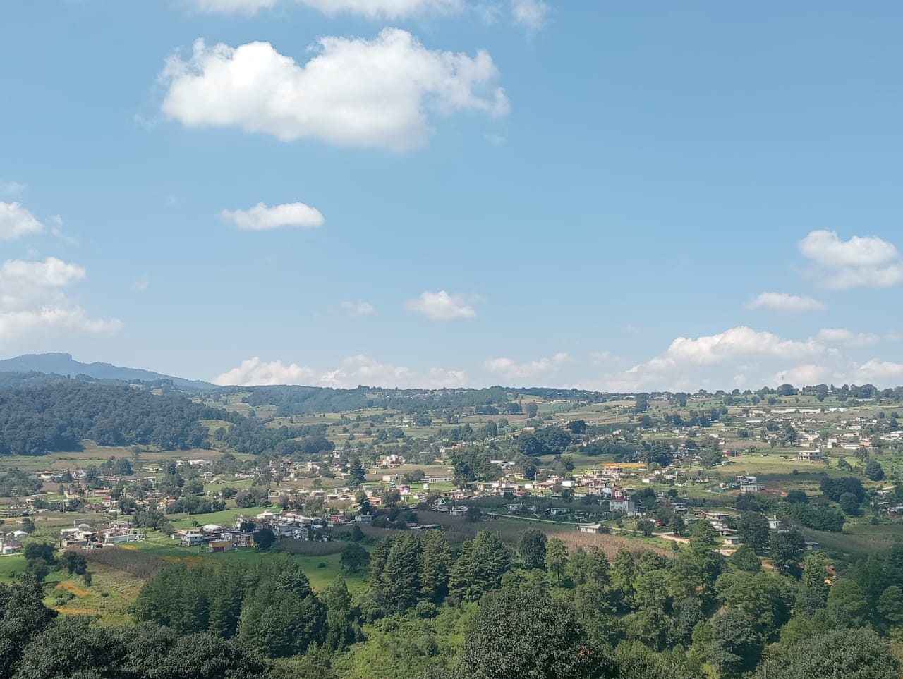
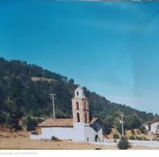
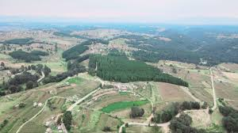
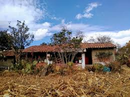
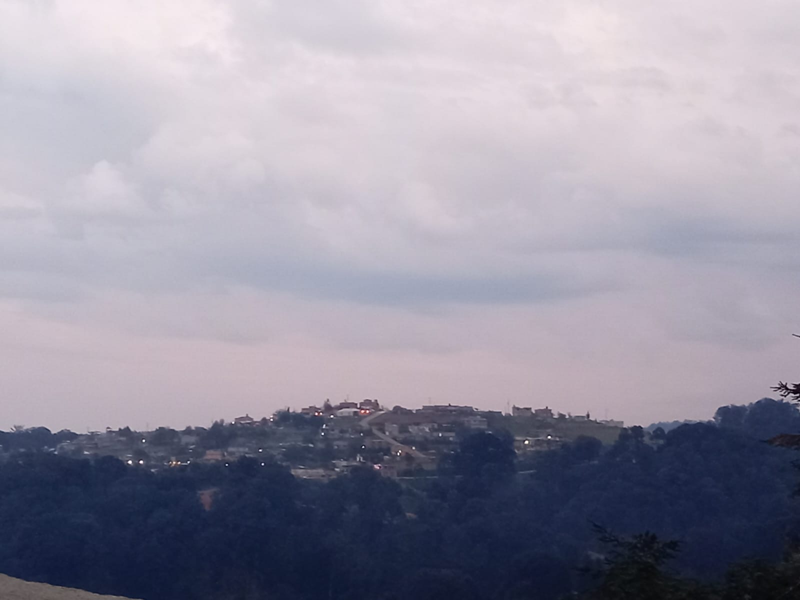
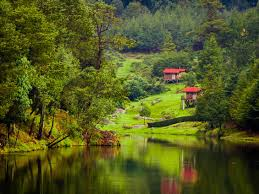
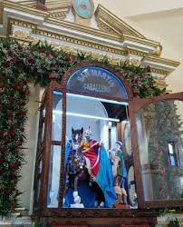
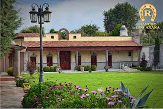
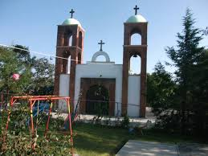
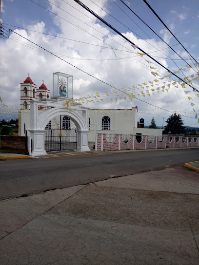

El Ocotal
Fecha: 16 de mayo
Santo que veneran: San José

La Capilla
Fecha: 19 de marzo
Santo que veneran: San José

San Isidro del Bosque
Fecha: 15 de mayo
Santo que veneran: San Isidro

Los Oratorios
Fecha: 8 de septiembre
Santo que veneran: Virgen de la Peña de Francia

Loma Alta
Fecha: 22 de diciembre
Santo que veneran: Virgen de la Soledad

El Águila
Fecha: 29 de septiembre
Santo que veneran:San Miguel Arcángel

San Martín Cachihuapan
Fecha: 11 de noviembre
Santo que veneran: San Martín de Tours

Los Arana
Fecha: 19 de marzo
Santo que veneran:San José

Las Moras
Fecha: 3 de mayo
Santo que veneran: La Santa Cruz

Monte de Peña
Fecha:15 de mayo
Santo que veneran:San Isidro Labrador